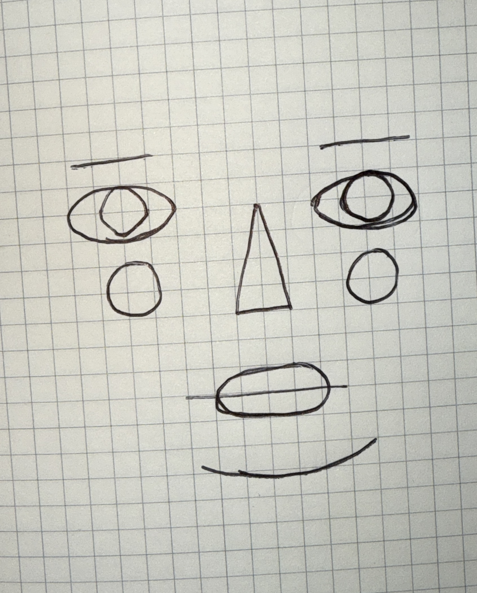
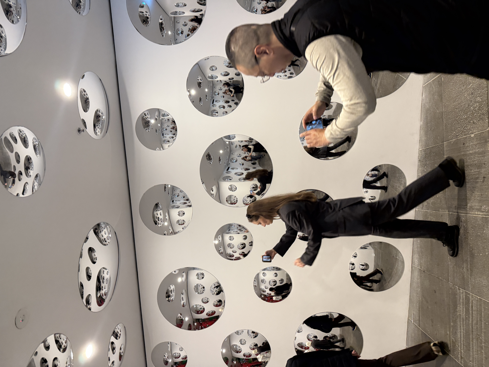

WEEK 4 (homework)
This week we were given 2 tasks for our homework: a self portrait created in ps5.js and a sketch inspired by the Yayoi Kusama exhibition. I also tried out some of the cheatsheets from this week, which I ended up using on my homepage.
1. Self Portrait
I drew a simple self portrait using simple shapes and recreated it on p5.js in VS Code. I made the hair interactive, straight just like mine.

2. Yayoi Kusama Inspired Sketch

This room in the Yayoi Kusama exhibition stood out to me. The mirrors scattered across the walls made me feel watched, not just by the art but also by the people that was there, taking pictures. I turned that feeling into this p5.js sketch, replacing the mirrors with eyes that track your movement..
3. Cheatsheet Experiments
I tried out several codes using the cheatsheet that was given on Canvas, which I then tweaked and edited to use across my homepages.